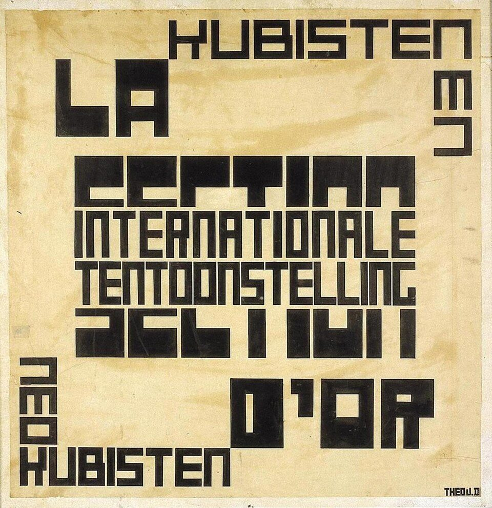

References / Poster / 161
Design for a poster for La Section d’Or
An ink design for an exhibition poster in which blocky right-angled capitals are stacked, stepped, and turned on their sides to fill a square.
- Source
- Wikimedia Commons: Theo van Doesburg, design for a poster for La Section d’Or
- Creator
- Theo van Doesburg
- Made
- About April 1920
- Style
- De Stijl (agent-proposed, not yet reviewed by a person)
- Moods
- Typographic, dense, rectilinear
- Evidence
- Inspected the Commons image (1106 × 1140 px, viewed at 960 px), from Geheugen van Nederland. The object is Indian ink on transparent paper mounted on panel, 65 × 62.5 cm, RCE inventory AB4980, on loan to the Centraal Museum Utrecht. No printed copy of the poster was checked.
- Reviewed
- Rights
- Open license, stored. License: public domain. Rights policy

Context
The inscriptions read “INTERNATIONALE TENTOONSTELLING LA SECTION D’OR”, “KUBISTEN EN” at top right, and “NEOKUBISTEN” at bottom left, signed “THEO V.D”. The design came to the Dutch State in 1981 with the Van Moorsel donation. Commons.
Commons lists it in the exhibitions De Stijl, 1917–1931: Visions of Utopia and Van Doesburg and the International Avant-Garde. Commons.
Observed
- All letters are black capitals built from thick horizontal and vertical strokes, like van Doesburg’s alphabet.
- “LA” sits large at top left; “KUBISTEN” runs along the top right, and “EN” descends vertically at the right edge.
- The center holds a stepped stack: a very heavy word, then “INTERNATIONALE” and “TENTOONSTELLING” in narrower letters, then another very heavy word.
- “D’OR” sits in a large block at lower right; “NEO” is turned on its side at the left and “KUBISTEN” runs along the bottom left.
- The transparent paper has yellowed and shows water stains; the signature “THEO V.D” is at bottom right.
Why it belongs
The words are placed as rectangular blocks that interlock across the square, so the text itself builds an asymmetric grid.
The heaviest words are hard to read, which shows how far van Doesburg put composition before legibility in 1920.
Borrow
Treat each word as a rectangle and interlock the rectangles in a square field, turning one or two words 90°.
Vary letter width, not letter shape, to fit words to the blocks.
Measured
Machine-extracted by tools/image-traits.py on . Full measurement.
- Mean chroma
- 0.19
- Palette
- #f2dfaf 38%
- #2c2722 17%
- #e6d2a2 14%
- #dfc78b 8%
- #1f1c19 6%
- #f3e8cc 5%
- #3e372d 4%
- #4d4538 2%

